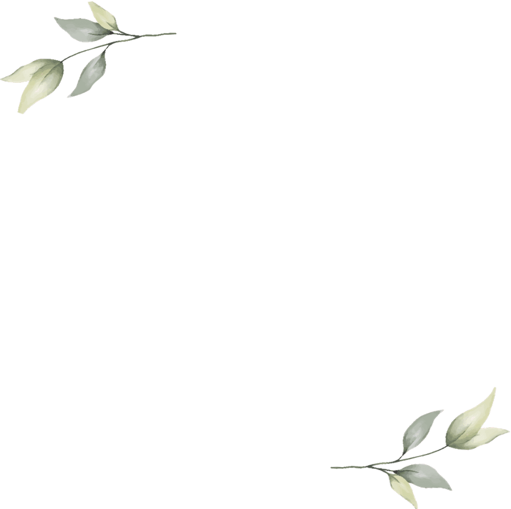
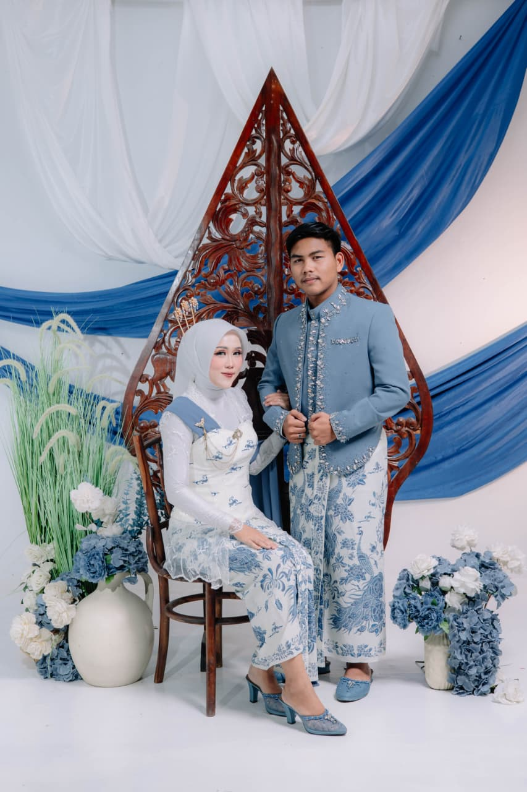
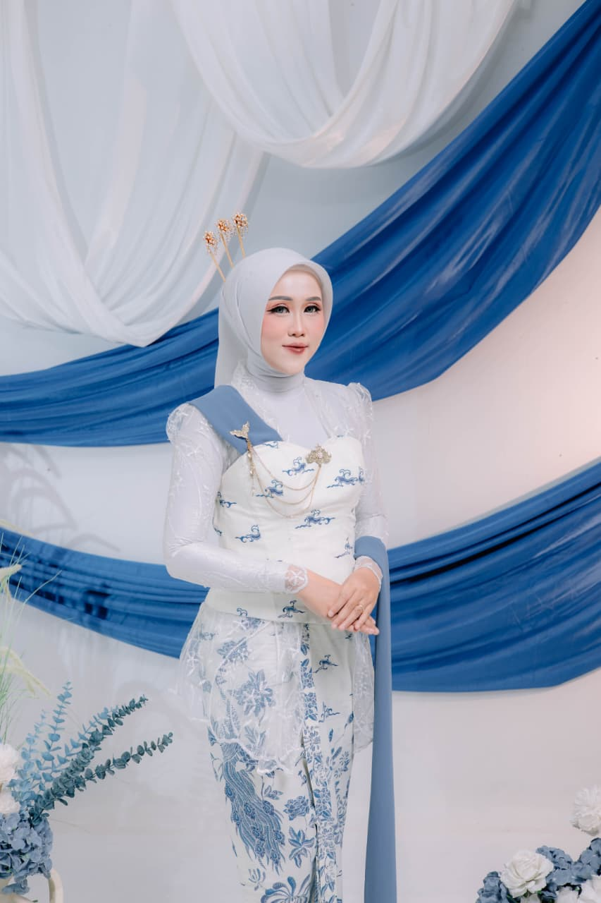
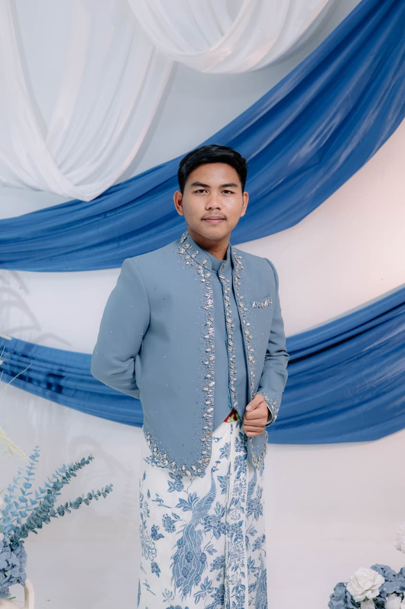
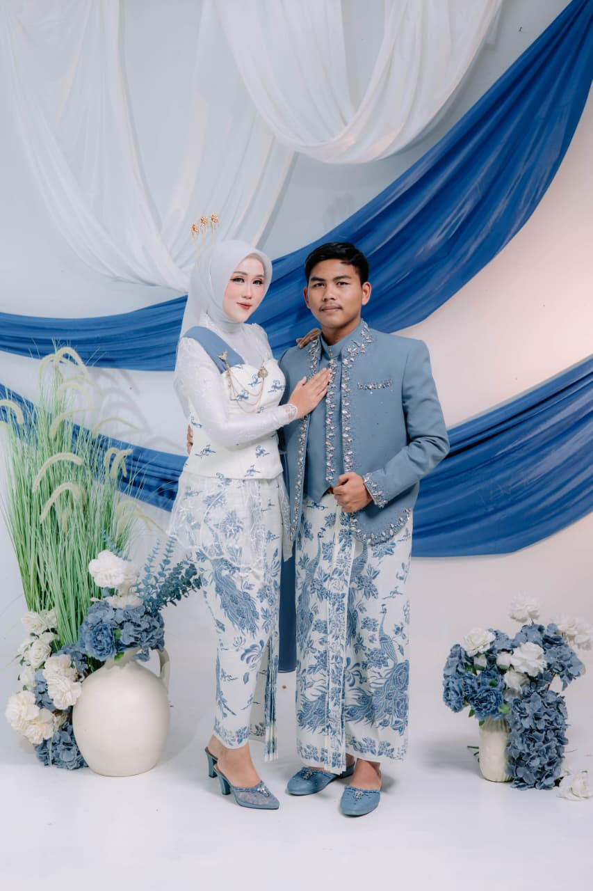
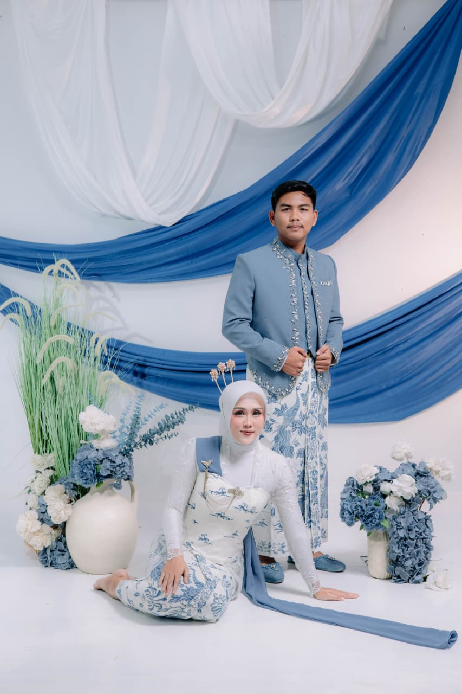

Kepada Yth. Bapak/Ibu/Saudara/i:
Tamu Undangan Terhormat
Di Tempat
TANPA MENGURANGI RASA HORMAT, KAMI MENGUNDANG
Tamu Undangan Terhormat
Di Tempat
Dengan memohon rahmat dan ridho Allah Subhanahu Wa Ta'ala, insyaaAllah kami akan menyelenggarakan acara pernikahan kami :

Putri dari Bapak Aziz Nahroji & Ibu Siti Jolekha

Putri dari Bapak Nahrowi & Ibu Suamah

Jum'at, 10 April 2026
07.00 WIB s.d Selesai
Kediaman Mempelai Wanita
Sabtu, 11 April 2026
16.00 WIB s.d Selesai
Kediaman Mempelai Wanita
Desa Kalisalak RT 003/RW 012 Kec. Margasari Kab. Tegal
Merupakan suatu kehormatan dan kebahagiaan bagi kami. apabila bapak/ibu /saudara/i berkenan hadir untuk memberika do’a restu kepada kedua mempelai. Atas kehadiran dan Doa Restunya kami ucapkan terimakasih.
Kehadiran dan doa restu Anda adalah kado terindah bagi kami.
Belum ada ucapan. Jadilah yang pertama memberikan doa restu!

Kami yang berbahagia, keluarga besar kedua mempelai